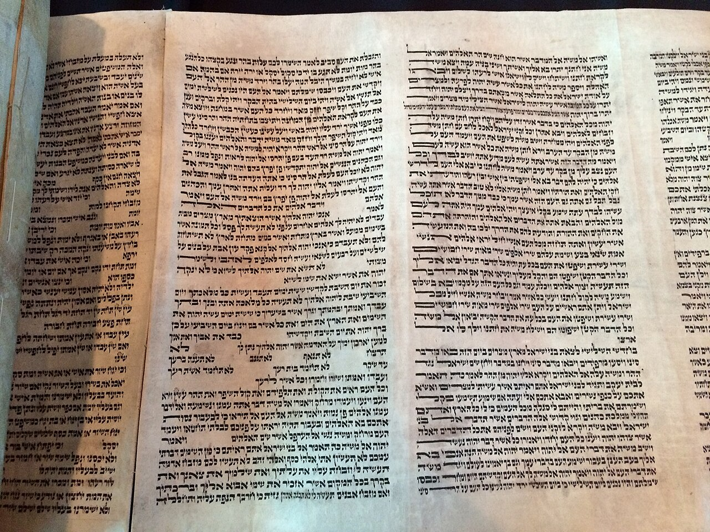
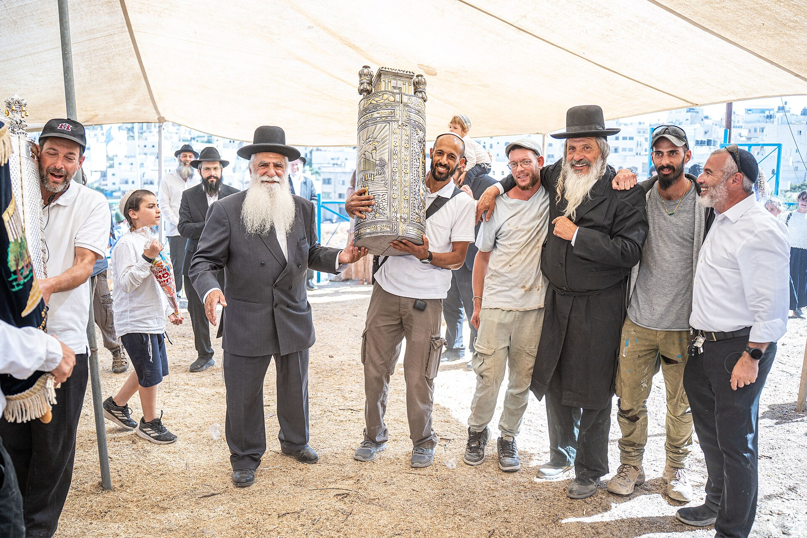
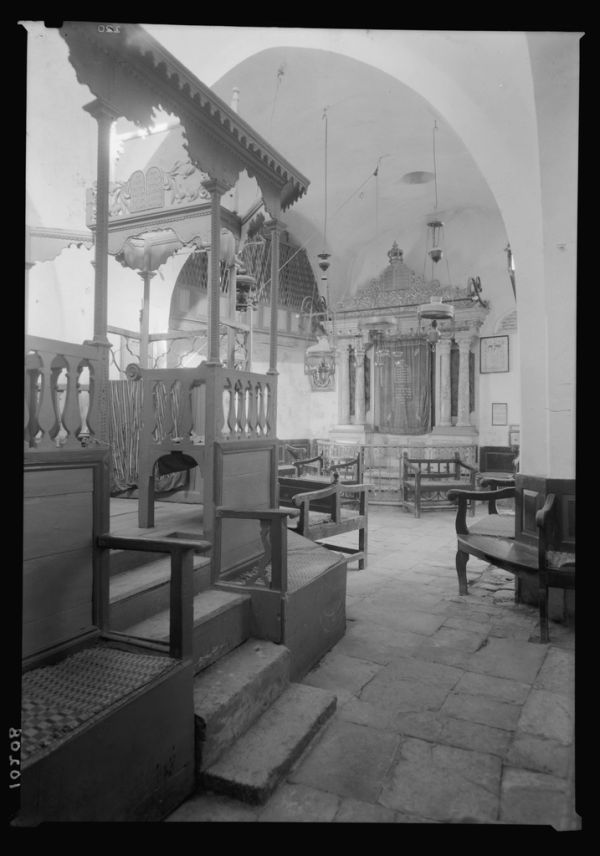

Nobody knows who wrote Adon Olam. Every synagogue sings it anyway.
Ten lines, a thousand years, and no signature. We follow the hymn from medieval Spain to the end of your Shabbat service.

Albany, Canaan, or wherever you find yourself
Lech‑Lecha לך לך
Genesis 12:1 to 17:27. Abraham is told to leave his land, his birthplace and his father's house, with no destination named. Read it in seven daily portions.
- Sun · 1stRead
- Mon · 2ndRead
- Tue · 3rdRead
- Wed · 4thRead
- Thu · 5thToday
- Fri · 6thFri
- Sat · 7thShabbat
days until Chanukah
First candle Friday evening, December 4. Order a menorah kit or find a public lighting near you.
- 1553BCE · 2208 from creation
The matriarch Rachel passes away
She dies giving birth to Benjamin on the road to Bethlehem and is buried by the wayside, where her tomb still draws visitors today.
- 2105BCE · 1656 from creation
Methuselah, the longest life
The longest-lived person recorded in the Torah dies at 969, days before the Flood begins.
- 1797CE · 5558
Rabbi Nachum of Chernobyl
A student of the Baal Shem Tov and the Maggid of Mezeritch, and founder of the Chernobyl Chassidic dynasty.

A real rabbi reads every question.
Private, free, and answered by a person. Ask about practice, belief, or the thing you have always wondered about.
A Shabbat table, wherever you land.
Classes, holiday services and a warm meal, in your city or the one you are visiting next week.
- Chabad of the Upper West Side0.8 mi
- Chabad Midtown2.1 mi
- Chabad of Park Slope6.4 mi
The Thursday letter: one parshah idea, one story, one recipe.
Arrives before Shabbat. Unsubscribe whenever you like.